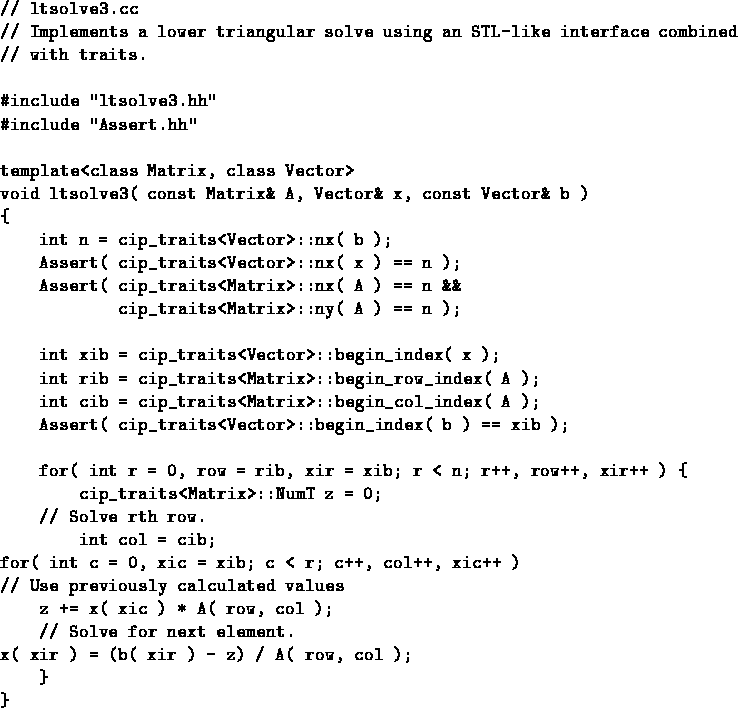

What we need is a way to learn information about a user defined type without asking our questions in a way which forces the user to actually modify the source code for the class. That is, what we would like to be able to do is to write our generic algorithms in a way which morphs to the characteristics of the user supplied containers. Clearly we have to be able to expect certain functionality from a numeric container, like the ability to ask how many elements it contains, but we would like to avoid making the constraints so stringent that most programmers would be forced to modify the source to their containers just in order to be able to call our algorithms. In other words, we would like to be able to state what functionality is required of a container, without mandating exact names of member functions and the like.
At first glance, this seems daunting. We are literally asking for the ability to extend the interface of a class without modifying the class itself. Once again C++ template technology provides the answer, this time in the form of a technique known as ``traits''[4]. The way this works is you declare a template class whose purpose is to be able to provide answers to questions you want to ask about some other class. In other words, it is a sort of compile-time consultable database which stores the ``traits'' of another class. You can then write your algorithm in terms of this traits class. The final piece of machinery is that the user specializes the traits class on the type of container he is going to pass you. This particularly clever use of parametric polymorphism[7] was originally invented to support internationalization requirements in the standard C++ library, but we will find it to be exceedingly useful for our purposes as well. Figure 4 presents our lower triangular solver algorithm reformulated to use traits.
|  |
With this expression of the algorithm, we are finally able to claim that the algorithm is reusable in a meaningful sense of the word. We are still placing requirements on the user supplied container types, but these requirements are now much easier to satisfy. For example, whereas ltsolve2 required that the class represented by the template parameter Vector must possess a member function nx() which would return the number of contained elements, ltsolve3 merely requires that there exist some way to determine this information. Exactly how this is to be determined is not the concern of the author of ltsolve3, but rather is specified by the user by specializing the template class cip_traits<T> on the supplied types.
In fact, by this time, the only remaining template (service) constraints placed on the user defined types represented by the template parameters Matrix and Vector are that they possess an operator()(int,int) and operator()(int) respectively. This warrants some additional comment. I could have chosen to use operator[](int) instead. For one dimensional containers, these will perform identically, and the choice is arbitrary. However, in the case of multidimensional containers, operator() is preferred because there is no multi-argument form of operator[]. Although you can implement multidimensional indexing with operator[], the cost is the introduction of a temporary ``proxy'' object for each [] to the left of the rightmost. This both complicates the implementation of the container and results in some amount of runtime overhead. So operator() will be simpler and faster than operator[] for multidimensional containers, and is moreover reminiscent of Fortran syntax, from which much of the culture of numerical algorithms is inherited. The use of operator() for the one dimensional container is thus chosen for consistency with containers of higher rank.
To remove any remaining mystery from the techniques exhibited in ltsolve3, we will now explore precisely how to implement the traits classes. Figure 5 shows the unspecialized traits class. By putting literally nothing in it, we ensure that any attempt to call ltsolve3 without first specializing cip_traits will result in a compile error. This is because if the user doesn't specialize cip_traits, then service requests of cip_traits<T> for some type T will go to the default class, which in fact has no services, thus resulting in a compile error.
Figure 6 shows how the cip_traits class can be specialized for some particular user defined matrix class. Here we see that the class UserMat uses zero based indexing. Consequently the traits class can answer questions about the starting index without even consulting the object at run time. However, for questions about the size of the container, the traits class must forward the request on to the actual run-time object. It is precisely this sort of ``forwarding'' which makes the traits class such a powerful idiom. It literally allows the user to construct a map between questions a library function may ask, and methods which can answer those questions. Note in particular, that this map can be either static (known at compile time) or dynamic (consult object at run time) on a question by question basis. Good optimizing compilers should be able to exploit the static mappings through constant propagation and related techniques[6].